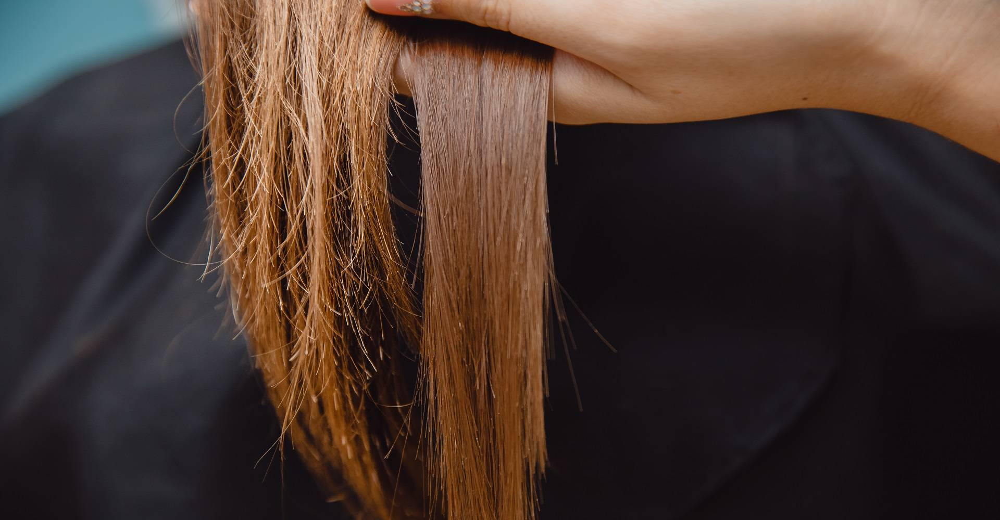

O QUE É?
A reconstrução capilar é um tratamento de cuidados com os cabelos que tem como objetivo reparar os danos na estrutura do fio capilar. É uma das etapas do cronograma capilar, um sistema de cuidados que combina hidratação, nutrição e reconstrução para manter a saúde dos cabelos. A reconstrução é particularmente importante para cabelos danificados, enfraquecidos, quebradiços e quimicamente tratados.

A importância da reconstrução capilar inclui:
Fortalecimento dos fios: A reconstrução ajuda a repor proteínas, principalmente a queratina, que é essencial para a estrutura do cabelo. Isso fortalece os fios, tornando-os menos propensos à quebra.
Reparo de danos: Cabelos sujeitos a tratamentos químicos, como coloração ou alisamento, ou danos causados por fatores ambientais podem desenvolver fissuras na estrutura capilar. A reconstrução ajuda a preencher essas fissuras e reparar os danos.
Restauração da elasticidade: Cabelos saudáveis são elásticos e flexíveis. A reconstrução ajuda a restaurar a elasticidade dos fios, tornando-os mais resistentes.

Fortalecimento dos fios: A reconstrução ajuda a repor proteínas, principalmente a queratina, que é essencial para a estrutura do cabelo. Isso fortalece os fios, tornando-os menos propensos à quebra.
Reparo de danos: Cabelos sujeitos a tratamentos químicos, como coloração ou alisamento, ou danos causados por fatores ambientais podem desenvolver fissuras na estrutura capilar. A reconstrução ajuda a preencher essas fissuras e reparar os danos.
Restauração da elasticidade: Cabelos saudáveis são elásticos e flexíveis. A reconstrução ajuda a restaurar a elasticidade dos fios, tornando-os mais resistentes.